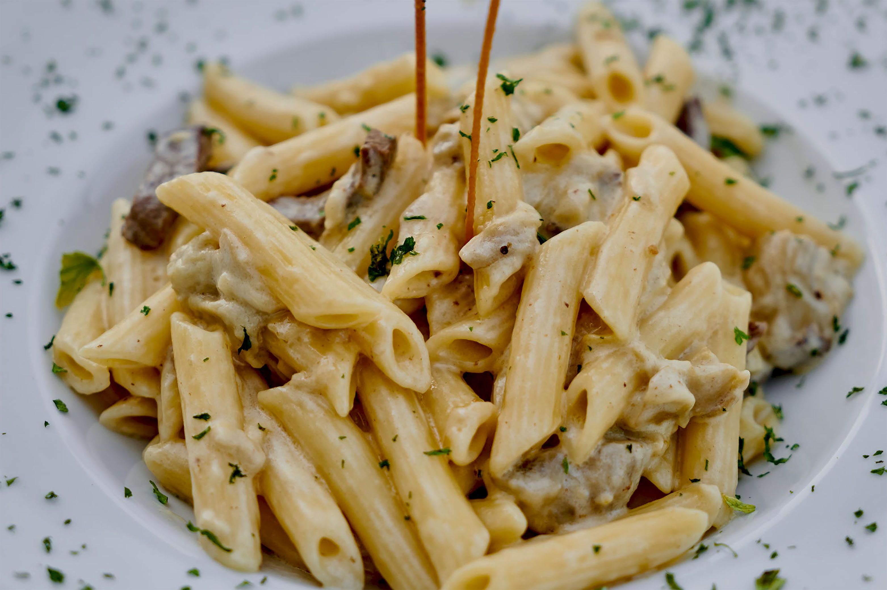

Click on the buttons inside the tabbed menu:
Off of the crowded street of Robson you will find a spiraling marble stone walkway leading to our modern Italian cuisine. Through the entrance is a wide elegant dining room to the right; and to the left is a modern, yet tasteful, lounge. Donatello’s holds several records in the city of Vancouver: it received its first award from the Vancouver Post shortly after opening back in 2008 and is the only five-star, Vancouver based restaurant that has maintained its high-end status since opening.
Donatello’s head chef, Philip Rossi, had begun his passion of cooking in Florence, Italy 1991. In his years of experience and expertise he has mastered the skill of preparation, detailed cooking and the art of plate presentation. Philip Rossi has won Donatello's several awards as well as won top chef of the Lower Mainland in 2017, 2018 and 2019
The Donatello staff are all detail oriented individuals who strive in a fast paced environment. With warm welcoming smiles, attentiveness and appreciation for feedback; our staff make a great team. We encourage our staff to stay diligent while working but to also interact with others and have a great time. The environment of Donatello’s shows the staff enjoy being here as much as the guests do.
Frank Donatello, the owner/creator of Donatello’s, moved to British Columbia back in 1989 to start his own restaurant. When Frank Donatello opened Donatello’s back in 2009 his idea was to bring authentic Italian fine dining to Vancouver and allow Canadians to have a real taste of true authentic Italian cuisine.